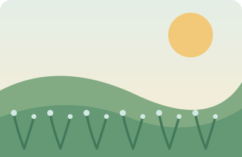

पुस्तक 04 · उन्नत हिंदीशब्दों से
शब्दों से
सृजन तक।
संधि, समास और वाच्य समझें। साहित्य का आस्वाद लें। तर्क, शैली और सृजन में निपुण बनें।
Book 04 · Class 7–9 inspired · Independent advanced readerअकआ


4भाग
40अध्याय
80पाठ
40कार्यपत्रक
मेरी प्रगति
0 / 80Saved on this device. No account needed.
प्रवेश: मध्यम हिंदी या समकक्ष पठन-लेखन एवं व्याकरण ज्ञान। यहाँ भाषा का विश्लेषण, साहित्यिक विवेचन और औपचारिक अभिव्यक्ति विकसित करें। Draft curriculum; adult guidance and Hindi educator review recommended.
विषय-सूची
Table of contentsभाग 01 · PHASE 1
व्याकरण और शब्द-संरचना
संधि, समास, शब्दोत्पत्ति और पद का विवेचन।
Grammar & morphology01हिंदी की विविधता और मानक रूप
Hindi registers and variation2 पाठ · 1 कार्यपत्रक
पढ़ें →02संधि — स्वर
Vowel sandhi2 पाठ · 1 कार्यपत्रक
पढ़ें →03व्यंजन और विसर्ग संधि
Consonant and visarga sandhi2 पाठ · 1 कार्यपत्रक
पढ़ें →04समास — संबंध और प्रधानता
Compounds and head words2 पाठ · 1 कार्यपत्रक
पढ़ें →05समास — अर्थ और संदर्भ
Compound meaning in context2 पाठ · 1 कार्यपत्रक
पढ़ें → 06
06तत्सम, तद्भव और आगत शब्द
Word origins2 पाठ · 1 कार्यपत्रक
पढ़ें →07शब्द निर्माण और अर्थ परिवर्तन
Morphology and meaning2 पाठ · 1 कार्यपत्रक
पढ़ें →08पद-परिचय — संज्ञा और सर्वनाम
Parsing nouns and pronouns2 पाठ · 1 कार्यपत्रक
पढ़ें →09पद-परिचय — विशेषण और क्रिया
Parsing adjectives and verbs2 पाठ · 1 कार्यपत्रक
पढ़ें →10शब्द-रचना का समेकित अभ्यास
Morphology review2 पाठ · 1 कार्यपत्रक
पढ़ें →भाग 02 · PHASE 2
वाक्य और शैली
वाच्य, उपवाक्य, वाक्य परिवर्तन और शैली।
Syntax & register11वाच्य
Voice2 पाठ · 1 कार्यपत्रक
पढ़ें →12वाक्य के उपवाक्य
Clause structure2 पाठ · 1 कार्यपत्रक
पढ़ें →13सरल, संयुक्त और मिश्र वाक्य
Sentence structures2 पाठ · 1 कार्यपत्रक
पढ़ें →14काल, पक्ष और मनोभाव
Tense aspect modality2 पाठ · 1 कार्यपत्रक
पढ़ें →15क्रिया और परसर्ग का उन्नत प्रयोग
Advanced verb patterns2 पाठ · 1 कार्यपत्रक
पढ़ें →16अव्यय और तार्किक संयोजन
Connectives2 पाठ · 1 कार्यपत्रक
पढ़ें →17प्रत्यक्ष और अप्रत्यक्ष कथन
Reported speech2 पाठ · 1 कार्यपत्रक
पढ़ें →18मानक वर्तनी और विराम
Orthography and punctuation2 पाठ · 1 कार्यपत्रक
पढ़ें →19अशुद्धि शोधन और शैली संपादन
Editing sentences2 पाठ · 1 कार्यपत्रक
पढ़ें →20वाक्य-विन्यास का समेकित अभ्यास
Syntax review2 पाठ · 1 कार्यपत्रक
पढ़ें →भाग 03 · PHASE 3
साहित्य और आलोचनात्मक पठन
गद्य, पद्य, अलंकार और पाठ-आधारित व्याख्या।
Literature & critical reading 21
21गद्य की विधाएँ
Prose genres2 पाठ · 1 कार्यपत्रक
पढ़ें →22
कहानी का कथानक
Plot and structure2 पाठ · 1 कार्यपत्रक
पढ़ें → 23
23कथावाचक और दृष्टिकोण
Narrative perspective2 पाठ · 1 कार्यपत्रक
पढ़ें → 24
24वर्णन, बिंब और प्रतीक
Description imagery symbolism2 पाठ · 1 कार्यपत्रक
पढ़ें → 25
25काव्य — लय और ध्वनि
Poetic rhythm and sound2 पाठ · 1 कार्यपत्रक
पढ़ें →
26अलंकार — अर्थ
Figures of meaning2 पाठ · 1 कार्यपत्रक
पढ़ें → 27
27अलंकार — शब्द
Figures of sound and wordplay2 पाठ · 1 कार्यपत्रक
पढ़ें →28
रस और भाव का परिचय
Aesthetic response2 पाठ · 1 कार्यपत्रक
पढ़ें →29
गद्य और पद्य का तुलनात्मक अध्ययन
Comparative reading2 पाठ · 1 कार्यपत्रक
पढ़ें → 30
30अपठित पाठ और आलोचनात्मक पठन
Critical comprehension2 पाठ · 1 कार्यपत्रक
पढ़ें →भाग 04 · PHASE 4
लेखन, तर्क और संप्रेषण
औपचारिक लेखन, तर्क, अनुवाद और स्वतंत्र परियोजना।
Writing & rhetoric31
औपचारिक पत्र और आवेदन
Formal letters2 पाठ · 1 कार्यपत्रक
पढ़ें → 32
32रिपोर्ट और समाचार लेखन
Report and news writing2 पाठ · 1 कार्यपत्रक
पढ़ें →33विचारात्मक निबंध
Argumentative essay2 पाठ · 1 कार्यपत्रक
पढ़ें →34
वर्णनात्मक और रचनात्मक निबंध
Descriptive and creative essays2 पाठ · 1 कार्यपत्रक
पढ़ें → 35
35भाषण और वाद-विवाद
Speech and debate2 पाठ · 1 कार्यपत्रक
पढ़ें → 36
36साक्षात्कार और संवाद
Interviews and dialogue2 पाठ · 1 कार्यपत्रक
पढ़ें →37अनुवाद और भाषा चयन
Translation and register2 पाठ · 1 कार्यपत्रक
पढ़ें → 38
38संपादन और समीक्षा
Editorial revision2 पाठ · 1 कार्यपत्रक
पढ़ें →39
स्वतंत्र शोध और प्रस्तुति
Independent inquiry2 पाठ · 1 कार्यपत्रक
पढ़ें →40उन्नत हिंदी — अंतिम अभ्यास
Advanced Hindi final practice2 पाठ · 1 कार्यपत्रक
पढ़ें →अब आगे क्या?
अंतिम अध्याय में अपने पढ़ने, लिखने, बोलने और सुनने का अभ्यास जाँचें।
अंतिम अभ्यास → हिंदी विषय-सूची · अगली पुस्तक